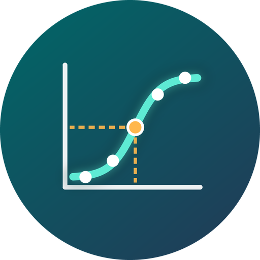
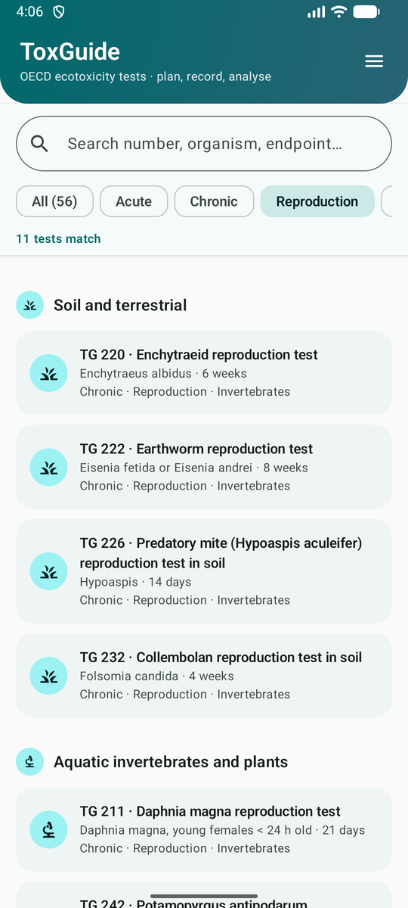
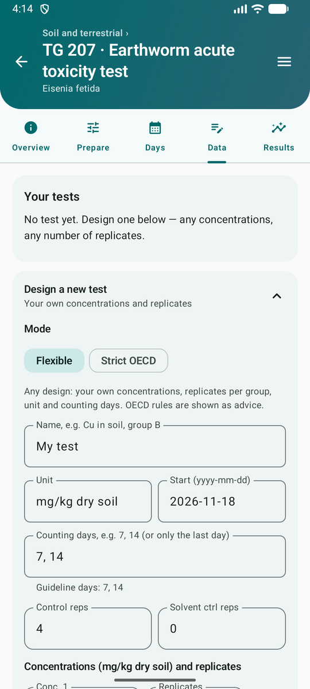
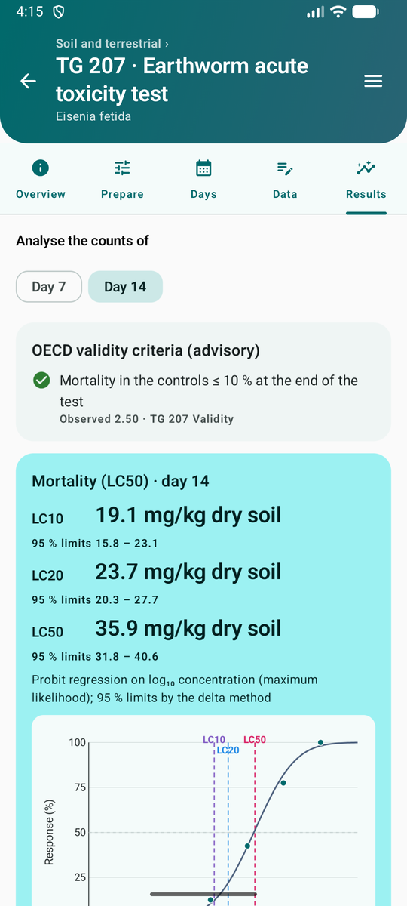
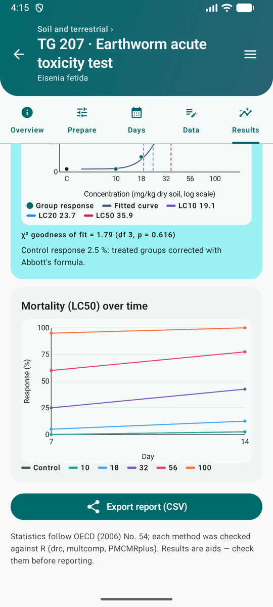

Prepared by
Md Kamruzzaman
Soil scientist and ecotoxicologist · MSc Soil Science (BAU) · MSc Ecotoxicology (MATE, ongoing)
Designed and built the app: guideline summaries, flexible test designer and the statistics engine.

Android app · version 1.0
Plan, record and analyse OECD ecotoxicity tests. All 56 Section 2 test guidelines in plain words, your own concentrations and replicates (or strict OECD design), counts on any day, and results with EC50/LC50, NOEC/LOEC and dose–response graphs. For students and laboratories. Free, works offline.
Download ToxGuide 1.0 (APK, 1.5 MB)TG 201–256 for soil, aquatic invertebrates and plants, fish, sediment, bees, birds, amphibians and sludge microorganisms — each summarised in plain words: what it measures, how it works, conditions, design and validity.
Acute, chronic, reproduction, embryo and early life, growth inhibition, endocrine, microbial function and more. Pick several types and only the matching tests stay.
Flexible mode for teaching and practice: your own concentrations, replicates per group (e.g. 4 controls, 2 per concentration), solvent control, unit and counting days. Strict OECD mode checks the design and gives a VALID / NOT VALID verdict.
EC/LC/LD10, 20 and 50 with 95 % limits (probit, Spearman–Kärber, log-logistic), NOEC/LOEC (Williams, Dunnett, Mann–Whitney), dose–response chart with every marker, and response over time.
A vessel without numbers is skipped with a note; the rest of the results and charts are still calculated from the vessels that have data.
Each guideline links to the official OECD PDF, downloaded once from oecd.org and then opened offline. CSV export of every run.




ToxGuide-1.0.apk.Statistics follow OECD (2006) Series on Testing and Assessment No. 54. Each method was checked against R (drc, multcomp, PMCMRplus). Guideline summaries are written in our own words; the official OECD documents remain the reference.
Soil scientist and ecotoxicologist · MSc Soil Science (BAU) · MSc Ecotoxicology (MATE, ongoing)
Designed and built the app: guideline summaries, flexible test designer and the statistics engine.